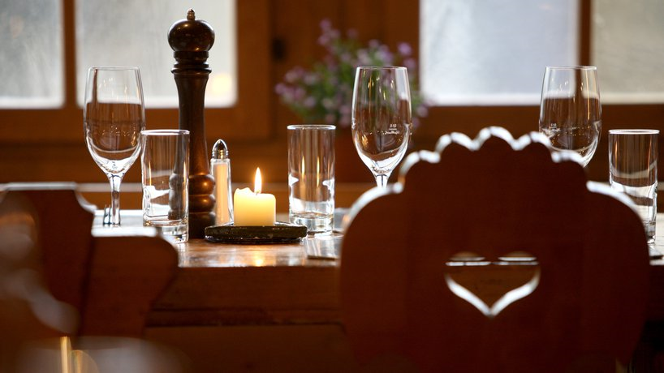

Das Habegger Haus has provided Fort Wayne with authentic Swiss, German,
Austrian and French cuisine since 1983. Harkening from Trub in the Canton of Bern,
Switzerland, the Habeggers of "Hawk Ridge" have been in the Indiana area since 1885.
Originally farmers by trade, we still believe in farm-to-table and locally source most
ingredients for our dishes. The foundation of our offerings are tried and true recipes
passed down through generations. Items include traditional German classics like schnitzel
(made with pork), the famous Austrian version wiener schnitzel (veal) and of course
items closer to home like our Bernese platter. Additional delectables can be found on our menu
page.

